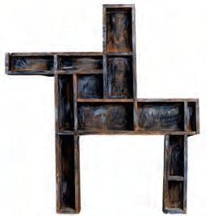
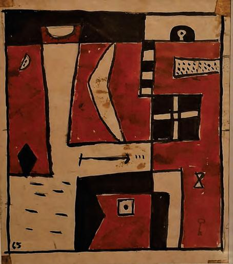

EN
La Escuela del Sur: a living tradition

The arrival of Joaquín Torres García (1874–1949) in Montevideo in 1934 marked a decisive turning point in the development of twentieth-century Uruguayan art. After more than four decades spent mainly in Europe and the United States, he brought with him an extensive artistic trajectory and a conception of art that had matured through diverse experiences. Among his immediate antecedents was Cercle et Carré, the movement founded in Paris with Michel Seuphor in 1929, which gathered figures linked to the abstract tendencies of the European avant-garde. After leaving France and settling in Madrid, Torres García launched the Grupo de Arte Constructivo in 1933, a brief experience that anticipated some aspects of the collective work he would later develop in Uruguay.His arrival in Montevideo encountered an artistic milieu that received his proposals with interest, though also with resistance. Barely settled, he launched intense public activity aimed at spreading his ideas and creating a space for teaching. He presented his thinking to the Montevideo public, organized exhibitions, gave courses and lectures, and founded Estudio 1037, at Uruguay 1037. There, during 1934, two exhibitions of painting and sculpture took place, and artists interested in his proposals began to gather. That same year he was appointed professor at the Faculty of Architecture of the Universidad de la República, where he proposed a theoretical-practical course on the visual arts of different cultures and periods.
Reception was far from unanimous. Sectors linked to social realism questioned the apparent political indifference of his Constructivist proposal. Torres García responded by defending the autonomy of art and the need to recover universal principles. At the center of his thinking was the search for an art of universal character, grounded in principles able to transcend particular eras and expressions. For Torres García, that universality found in structure (the harmonious relation between the parts and the whole of a work) a common foundation linking modern art with artistic manifestations of different cultures and times. These controversies show the extent to which his arrival introduced a discussion that exceeded formal problems and reached the very conception of art’s function.
In that context, toward the end of 1934, the Asociación de Arte Constructivo (AAC) took shape; artists of different generations passed through it, among them Augusto and Horacio Torres, Rosa Acle, Héctor Ragni, Amalia Nieto, María Sara Gurméndez, Víctor Bacchetta, and Edgardo and Alceu Ribeiro. The Association functioned as a space for the training and dissemination of constructivist doctrine through exhibitions, lectures, and publications. Through books and the magazine Círculo y Cuadrado, Torres García’s ideas gained a circulation that accompanied his tireless activity. In 1940 even his five-hundredth lecture was published—testimony to the scale of that labor.

Around 1942 a new stage began with the formation of the Taller Torres García (TTG). The School of the South then acquired a decisive pedagogical dimension. Learning developed through everyday work and direct contact between master and disciples.